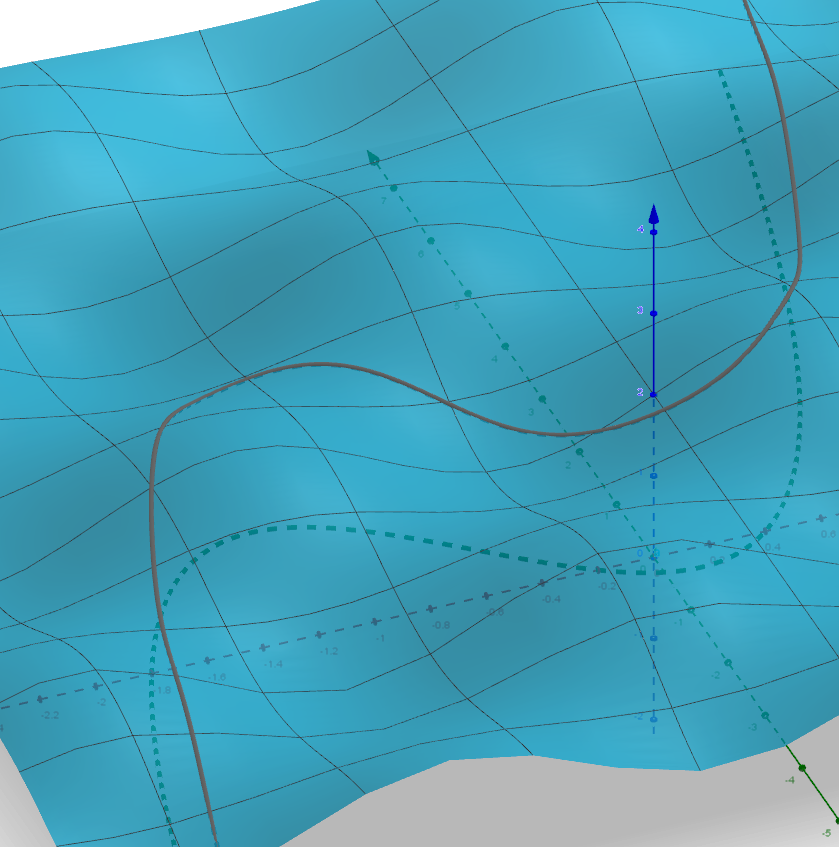
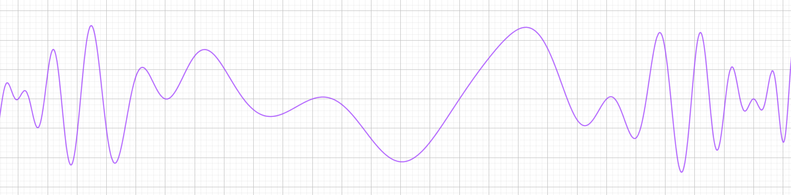

This section is aimed at students in upper secondary education in the Danish
school system, some objects will be simplified and some details will be omitted.
Vector Functions
As mentioned in this section, vector functions are
functions on finite dimensional Euclidean Spaces, i.e.
$$f:\mathbb{R}^n\mapsto\mathbb{R}^m$$
and the objects in the domain and co-domain can be considered \(n\) and
\(m\) dimensional vectors respectively. Higher dimensions can be interesting
for things such as AI research, but we will commonly restrict ourselves to
\(1\leq n,m\leq3\), since this corresponds to our physical world.
Parametric Functions
Parametric functions are simply vector functions where \(n=1\) and
\(m=2,3\), representing planar and spatial functions, respectively. I will
only cover the spatial parametric functions since the planar ones are
completely analogous.
It is common to use the following nomenclature for a spatial vector
functions \(\underline{r}:\mathbb{R}\mapsto\mathbb{R}^3\) with
$$\underline{r}(t)=\begin{pmatrix}x(t)\\y(t)\\z(t)\end{pmatrix}$$
where \(x,y,z:\mathbb{R}\mapsto\mathbb{R}\) are called its
"coordinate-functions" for obvious reasons. Some people, especially
engineers and technicians, may use an arrow above the r rather than the
underline, but it becomes tedious to draw, conflicts with other notation
and means the same thing, namely that the function value is a vector.
Derivatives
To find the derivative of a parametric function, you just differentiate
coordinate-wise, i.e. the coordinate-functions. The first derivative
is called the velocity vector with the following notation
$$\underline{v}(t)=\underline{r}'(t)=\begin{pmatrix}x'(t)\\y'(t)\\z'(t)
\end{pmatrix}$$
In reality, we should calculate the tangent slope through the secant
slope, but we end up with the same thing
\begin{align}
\frac{\underline{r}(t+h)-\underline{r}(t)}{h}=&\left(\begin{pmatrix}
x(t+h)\\y(t+h)\\z(t+h)\end{pmatrix}-\begin{pmatrix}x(t)\\y(t)\\z(t)
\end{pmatrix}\right)/h\\
=&\begin{pmatrix}(x(t+h)-x(t))/h\\(y(t+h)-y(t))/h\\(z(t+h)-z(t))/h
\end{pmatrix}\to\begin{pmatrix}x'(t)\\y'(t)\\z'(t)\end{pmatrix}
\end{align}
The reason it's called the velocity vector is because it's represents
the instantaneous change in position, and visually it is tangent to
the graph. We can do this one more time to get the acceleration vector, i.e.
$$\underline{a}(t)=\underline{v}'(t)=\underline{r}''(t)=
\begin{pmatrix}x''(t)\\y''(t)\\z''(t)\end{pmatrix}$$
where this vector represents the instantaneous acceleration and is
represents visually which way the graph is "curving".
We can take any of these parametric functions and turn them into a
single dimensional function by taking the length of the vectors, i.e.
$$v(t)=|\underline{v}(t)|=\sqrt{x'(t)^2+y'(t)^2+z'(t)^2}$$
Functions of Multiplie Variables
Another interesting use-case is the opposite of the parametric functions,
where \(n=2,3\) and \(m=1\). This time I will choose the lower value for
n, since this has interesting visualizations. The nomenclature here is
\(f:\mathbb{R}^2\mapsto\mathbb{R}\) with
$$z=f(x,y)$$
which has a graph that is a three dimensional surface, which can be used
to represent a hillscape, among other things.
Sectional Functions
Just like with the parametric functions we can turn multivariate into
a single variable function by relating \(x\) to \(y\). So for some
function \(g:\mathbb{R}\to\mathbb{R}\), which I will call "sectioning"
function, we can construct what I will call the "sectional" function
\(p:\mathbb{R}\to\mathbb{R}\)
$$p(x)=f(x,g(x))$$
which sections the surface by the graph of \(g\). On the following image
you can see the graph of the sectioning function on the \((x,y)\)-plane
and how it sections the surface.

If this surface represented a hillscape, then the sectional function
would describe the our height as we followed the path of the sectioning
function, and looking along the y-axis it would look like the following
image

Two sectioning functions that are of particular interest are constant
functions, representing cross-sections that are parallel to the axes.
These are then \(v(x)=f(x,k)\) and \(u(x)=f(k,x)\).
Derivatives
In this case, it's not easy to consider one tangent, because it could
go in any direction, so what we do is we create a so-called
directional-derivative
$$f_v'(\underline{r})=\lim_{h\to0}\frac{f(\underline{r}
+h\underline{v}^*)-f(\underline{r})}{h}$$
where the * denotes a unit vector in the direction of v. But it turns out that it's
unnecessary to consider all directions at once, we can focus on the
horizontal and vertical tangents. These correspond to so-called
partial-derivatives.
Partial Derivatives
For the multivariate function \(f(x,y)\) and the corresponding
cross-sectional functions \(v_k(x)=f(x,k)\) and \(u_k(x)=f(k,x)\), we
define the partial derivative with respect to \(x\) as
$$\frac{\partial f}{\partial x}(x,y)=v_y'(x)$$
with respect to \(y\)
$$\frac{\partial f}{\partial y}(x,y)=u_x'(y)$$
and the corresponding "gradient" as
$$\nabla f(x,y)=\begin{pmatrix}\frac{\partial f}{\partial x}(x,y)\\
\frac{\partial f}{\partial y}(x,y)\end{pmatrix}$$
We can relate this to the directional derivative by the following
proposition
Theorem
$$f_v'(x,y)=\frac{\underline{v}}{|\underline{v}|}\bullet\nabla f(x,y)$$
Proof.
$$f_v'(x,y)=\lim_{h\to0}\frac{f(\underline{x}+h\underline{v}^*)-f(\underline{x})}{h}$$
$$=\lim_{h\to0}\frac{f(x+hv_1,y+hv_2)-f(x,y)}{h}$$
$$=\lim_{h\to0}\frac{f(x+hv_1,y+hv_2)-f(x,y+hv_2)+f(x,y+hv_2)-f(x,y)}{h}$$
$$=\lim_{h\to0}v_1\frac{f(x+hv_1,y+hv_2)-f(x,y+hv_2)}{hv_1}+v_2\frac{f(x,y+hv_2)-f(x,y)}{hv_2}$$
$$=v_1f_x'(x,y)+v_2f_y'(x,y)=\underline{v}^*\bullet\nabla f(x,y)$$
∎
Corollary
The direction of the heighest growth is then the direction that
makes this scalar product have the heighest value, which obviously
is in the direction of the gradient. The magnitude of the gradient is
the greatest slope at that point since
$$ f_{\nabla f}'(x,y)=\frac{\nabla f}{|\nabla f|}\bullet\nabla f(x,y)=\frac{|\nabla f|^\cancel{2}}{\cancel{|\nabla f|}}(x,y)$$
Furthermore, this also implies that the gradient being the zero vector implies
that the slope is zero in any direction, which is a necessary and sufficient condition
for a stationary point.
Derivative of composites
Let \(s:\mathbb{R}\to\mathbb{R}^2\) with \(s(t)=\begin{pmatrix}x(t)\\y(t)\end{pmatrix}\) and \(g:\mathbb{R}^2\to\mathbb{R}\)
be differentiable in all variables, then the composite function \(f=g\circ s:\mathbb{R}\to\mathbb{R}\)
is also differentiable and the derivative can be calculated as follows
$$f'(t)=\nabla g(s(t))\bullet \underline{s}'(t)$$
Proof.
$$f'(t)=\lim_{h\to 0}\frac{f(t+h)-f(t)}{h}$$
$$=\lim_{h\to 0}\frac{g(\underline{s}(t+h))-g(\underline{s}(t))}{h}$$
$$=\lim_{h\to 0}\frac{g(x(t+h),y(t+h))-g(x(t),y(t))}{h}$$
$$=\lim_{h\to 0}\frac{g(x(t+h),y(t+h))-g(x(t),y(t+h))+g(x(t),y(t+h))-g(x(t),y(t))}{h}$$
$$=\lim_{h\to 0}\frac{g(x(t)+k_x,y(t+h))-g(x(t),y(t+h))}{k_x}\frac{x(t+h)-x(t)}{h}+\frac{g(x(t),y(t)+k_y)-g(x(t),y(t))}{k_y}\frac{y(t+h)-y(t)}{h}$$
$$=g_x'(\underline{s}(t))x'(t)+g_y'(\underline{s}(t))y'(t)=\nabla g(\underline{s}(t))\bullet \underline{s}'(t)$$
where \(k_x=x(t+h)-x(t)\) and \(k_y=y(t+h)-y(t)\)
∎